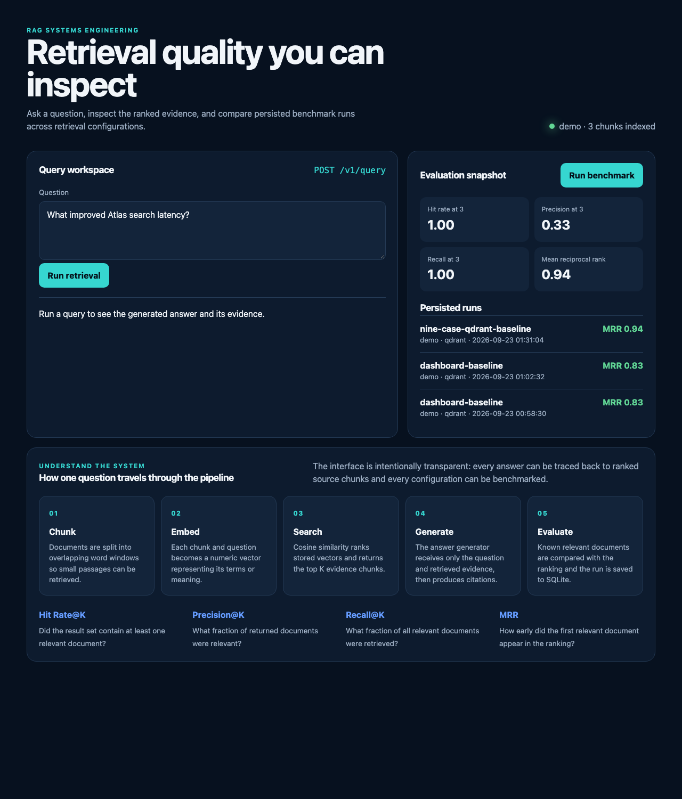

Chunk
Split documents into overlapping passages with stable IDs.
An inspectable retrieval system that persists evidence, measures ranking quality, and proves whether a new retriever actually improves the result.
Many RAG demos stop after producing plausible text. This project treats retrieval as a measurable engineering system. Every answer exposes ranked source chunks, and every experiment is evaluated against labeled document IDs.

The running dashboard combines query inspection, retrieval metrics, experiment history, and a plain-language system walkthrough.
Split documents into overlapping passages with stable IDs.
Convert passages and questions into comparable vectors.
Combine vector and BM25 ranks using weighted RRF.
Write an answer from the retrieved evidence and attach citations.
Compare retrieved IDs with labels and persist the run.
Qdrant stores vectors and chunk payloads across restarts with deterministic UUIDs.
The in-memory store shows the cosine calculation directly and keeps tests fast.
Hashing embeddings and extractive answers run without network access or API cost.
Configuration can switch to OpenAI embeddings and the Responses API.
SQLite records the provider, backend, metrics, K, latency, and timestamp.
CLI commands, FastAPI, OpenAPI docs, Docker, tests, and a responsive dashboard.
ragbench doctor
ragbench query "What improved Atlas search latency?" --top-k 3
RAGBENCH_RETRIEVAL_MODE=hybrid ragbench evaluate --name hybrid-demo --k 3
ragbench serve --reload